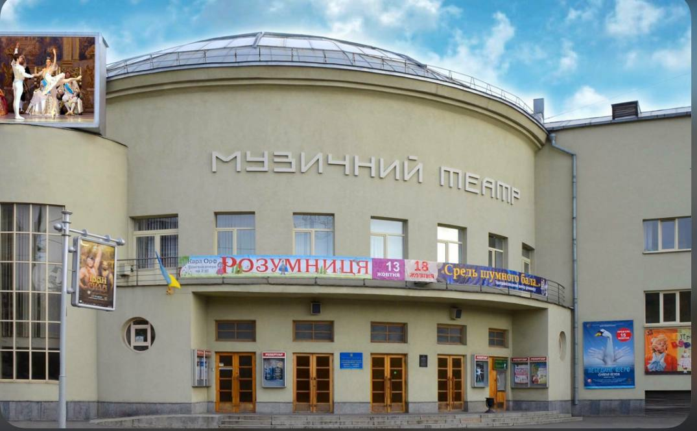

Театри і концертні зали Києва
Київ надає своїм жителям і гостям найширші можливості для відпочинку і розваг. Особливу увагу варто приділити театрам столиці - вони мають різноманітний і захоплюючий репертуар і цікаву історію.
Національна опера України
Національний академічний театр опери та балету України імені Т. Г. Шевченка — театр опери і балету у Києві, заснований 1867 року. Театр розташований на вул. Володимирській, 50.
Національний академічний драматичний театр ім.І.Франка
Театр імені Івана Франка було засновано у Вінниці 1920 року частиною акторів Молодого театру на чолі з Гнатом Юрою та акторами Нового Львівського театру на чолі з Амвросієм Бучмою. Об'єднавшись, митці утворили театральний колектив під назвою «Новий Драматичний театр імені Івана Франка», керівником якого було обрано Гната Юру. Електрона адреса театру ft.org.ua Театр розташований на пл.Івана Франка, 3
Національний драматичний театр ім.Л.Українки.
«Театр на «Театральній» був центром культурного життя столиці ще у ті часи, коли ані Театральної; ані метро взагалі у Києві не було. Адже наша історія веде початок аж із 1891 року – дати заснування першого у Києві стаціонарного театру популярним на той час режисером та актором, успішним театральним менеджером Миколою Соловцовим. Свої перші вистави його трупа грала саме у тому приміщенні, де і сьогодні працює Театр імені Лесі Українки.Електрона адреса театру lesyatheatre.com.ua Адреса театру вул.Б.Хмельницького, 5
Молодий київський академічний драматичний театр
Театр не зраджує маніфесту, проголошеному акторами Молодого 100 років тому. Як і тоді сенс життя та праці Молодого в пошуках вічних тем, що хвилюють людей в усі часи. Електрона адреса театру molodyytheatre.com Адреса театру вул. Прорізна, 17
Музичний театр для дітей та юнацтва
Київський муніципальний академічний театр опери і балету для
дітей та юнацтва (Київська опера) — театр у Києві, був створений
у 1982 році під назвою Державний дитячий музичний театр. Театр
став першим (і наразі єдиним) в Україні та другим у світі
подібного профілю. Починаючи з 2019 року театр позициціонує себе
під назвою Київська
опера і єдиним серед оперних театрів
України
дотримується політики виконання творів світового оперного
репертуару українською мовою
Національний будинок органної та камерної музики
Національний будинок органної і камерної музики України — заклад культури у Києві, Україна. Розташований в перебудованому під концертний зал приміщенні Костелу святого Миколая з лютого 1980 року. Адреса: вул. Велика Васильківська, 77.
Національна філармонія Украіни
Купецький клуб, палац піонерів, німецький клуб — назви будинку, в якому нині знаходиться Національна філармонія України, яка була побудована за проєктом відомого в Києві архітектора, академіка архітектури Володимира Ніколаєва. Тривала історія будівлі насичена різними подіями та пов'язана з іменами всесвітньо-відомих особистостей: Ф. Ліст, Г. Нейгауз, Р. Пфеніг, М. Лисенко, С. Рахманінов, О. Глієр, Ф. Шаляпін, Н. Рахлін та інші. Головна зала філармонії (колонна зала) понад 60 років носить ім'я видатного українського композитора, піаніста, вихователя, етнографа, фольклориста Миколи Віталійовича Лисенка. З 1996 року, після реконструкції, Колонна зала приймає своїх гостей і продовжує підтримувати славу найкращого концертного майданчика України з неперевершеною акустикою.